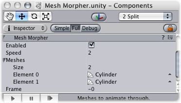

Previous
Previous
The Mesh morpher filter takes a number of meshes and morphs between them over time.
|  |
The Mesh Morpher Component
Properties
| Property: | Function: |
|---|---|
| If enabled, the Mesh Morpher cycles between the different frames automatically. | |
| How many frames the mesh morpher goes through in one second. | |
A list of meshes to cycle through.
| |
| The frame currently shown. |
Details
The Mesh Morpher works a lot like the Mesh Filter. You want to have a Mesh Renderer as the other filter in the object.
Hints
- You can modify the Frame directly to control the speed of the morph.
- The number of Vertices and Polygons should be identical across all the meshes being morphed, in order to avoid fragmented transitions.
- You need to make sure that your 3D modeller saves the vertices in the same order for all meshes.